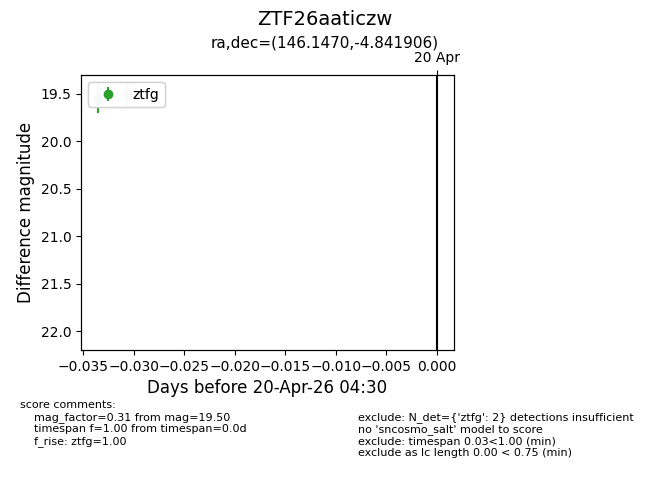
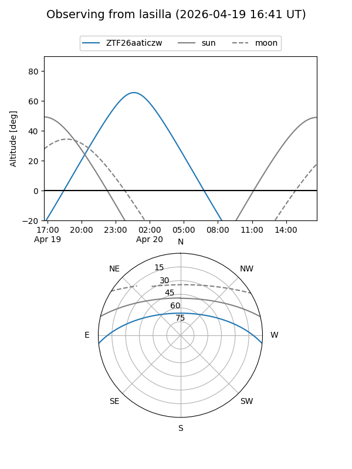
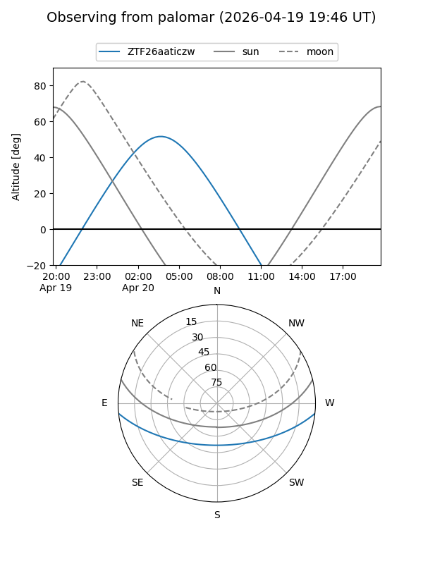

ZTF26aaticzw
Target ZTF26aaticzw at 2026-04-20 04:41
Aliases and brokers:
FINK: link
Lasair: link
ALeRCE: link
alt names
ZTF26aaticzw (ztf,fink_ztf)
Coordinates:
equatorial (ra, dec) = 146.1470,-4.84191
equatorial (HMS+DMS) = 09:44:35.28,-04:50:30.86
galactic (l, b) = (240.9931,+34.71978)
Flags:
Photometry:
last ztfg=19.50
2 ztfg detections
Lightcurve

Visibility


Additional plots